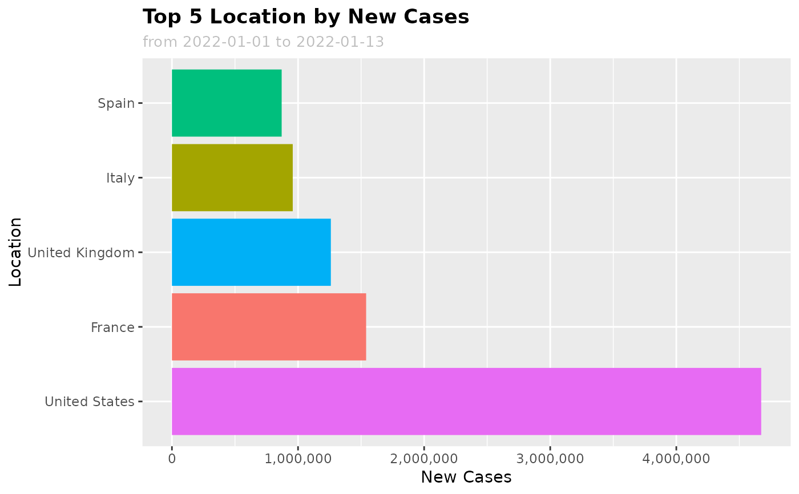

plot_summary.RdCreate a horizontal bar chart summarizing a specified variable and value within a time period
plot_summary(
df,
var = "location",
val = "new_cases",
fun = "sum",
date_from = NULL,
date_to = NULL,
top_n = 5
)Data frame of the selected covid data from get_data()
Qualitative values to segment data. Must be a categorical variable. Also known as a 'dimension'. By default 'location'
Quantitative values to be aggregated. Must be numeric variable. Also known as a 'measure'. By default 'new_cases'
Aggregation function for val, by default 'sum'
Start date of the data range with format 'YYYY-MM-DD'. By default 'NULL' is used to represent 7 days prior to today's date
End date of data range with format 'YYYY-MM-DD'. By default 'NULL' is used to represent today's date
Specify number of qualitative values to show, by default 5
ggplot chart object
df <- get_data()
#> Rows: 159093 Columns: 67
#> ── Column specification ────────────────────────────────────────────────────────
#> Delimiter: ","
#> chr (4): iso_code, continent, location, tests_units
#> dbl (62): total_cases, new_cases, new_cases_smoothed, total_deaths, new_dea...
#> date (1): date
#>
#> ℹ Use `spec()` to retrieve the full column specification for this data.
#> ℹ Specify the column types or set `show_col_types = FALSE` to quiet this message.
plot_summary(
df,
var = "location", val = "new_cases", fun = "sum",
date_from = "2022-01-01", date_to = "2022-01-13", top_n = 5
)
